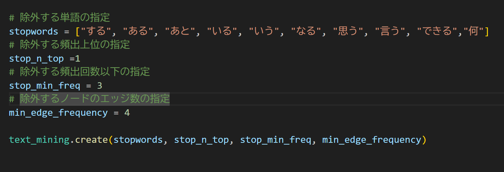
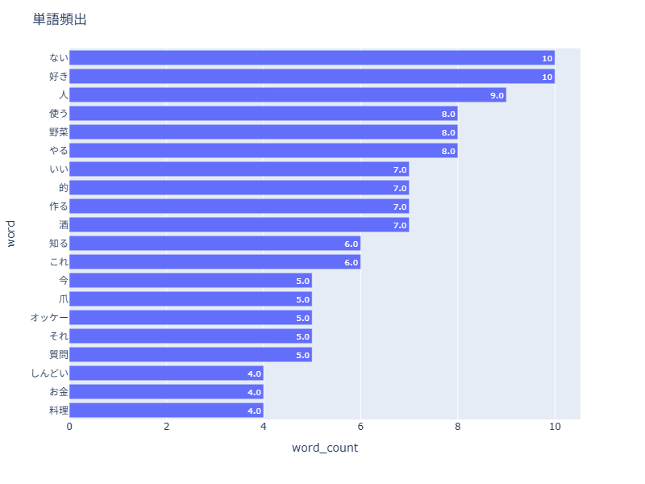
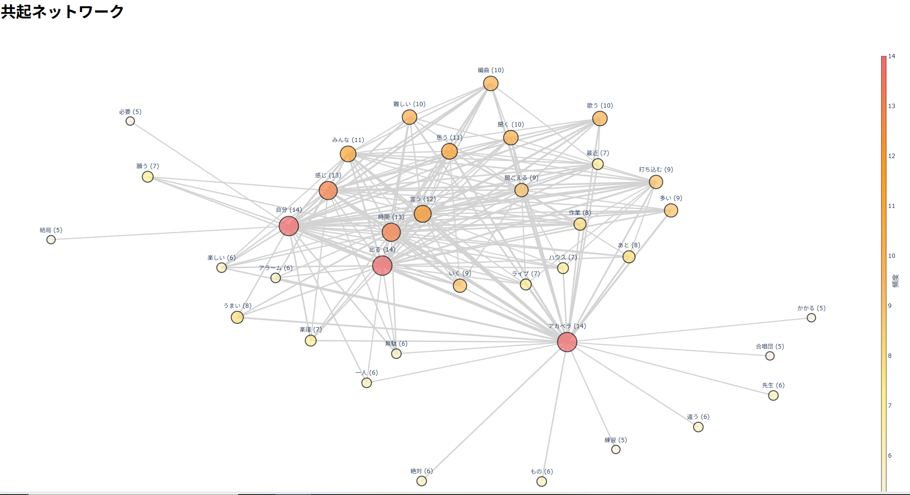
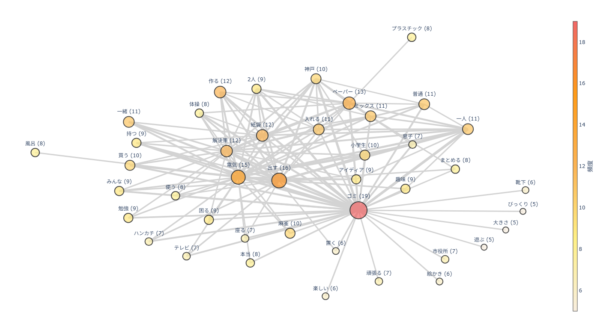
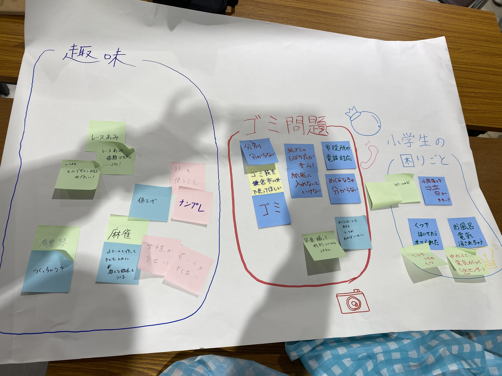

鎌倉共創プロジェクト
4/11
初回
グループ決め(道用さんは運まかせは嫌いらしい)
すこしマイクと動画撮影の練習
→動画はできるだけ小さくすること
4/18
動画の練習（約15分）
インタビューの練習
→最初に動画をとることや調査に使うことを断っておく
4/25
動画の分析練習
→「何」がおおい⇒消す単語に入れる、質問で「なんで」「なに」を使いすぎない
→共起ネットワークでつながりが出ない⇒質問の回答の返答で大事そうな言葉を繰り返す


5/9
前日最終練習
動画30分⇒ちょっと解決案の話し合い⇒共起ネットワーク

道用さんの共起ネットワークちょーやりやすい、見やすい、わかりやすい
⇒夢みたいな解決案ばっかり出さないこと
⇒現実を見る
⇒なんでもAIで済まさないこと
5/10
大学ホームページ
当日 cocoru鎌倉


１、趣味について
麻雀
⇒女性でルールを知っている人が少ない、かなしい😢
⇒教えて上げたい
→ラボで簡易的な🀄麻雀セットを作れば小学生とかにも教えてあげられるかも
あみもの
⇒レース編みが好き
⇒ガーゼも糸も値上がりしちゃった😭
⇒材料は買ってきてもらう
→作ったものを誰かに見てもらえるような機会があればうれしいかも
お琴（須磨琴）
⇒弦が一弦のお琴 昔やってた
→つくれるのでは？
２、小学生の困りごと
水筒を落とした時の音にびっくりした
→水筒のカバーとかつくれたらいいかも
靴下はいてたら遅くて怒られた
→靴下と靴くっつけちゃえばいいじゃん
お風呂に入ってるときにいたずらで電気を消されてしまった😱
→中にいるときは電気が消えない仕組みを作る
→でも、消したらつくにしちゃうとずっと電気がついてしまう
→人がお風呂に入っている間は湯気が出る→水センサーで反応するようにすればこの仕組みがうまくいくのでは？
３、鎌倉市のごみ問題
分別が厳しい わからないものは市役所に電話して聞くのがめんどくさい
→写真で送れるようにするか機械識別してもらうか
厚紙 中が茶色なら段ボール、その他なら燃えるゴミ
→めくらなくても分かるようにマークがあればいいのに
指定のごみ袋
市外で売っていない、買わなきゃいけない